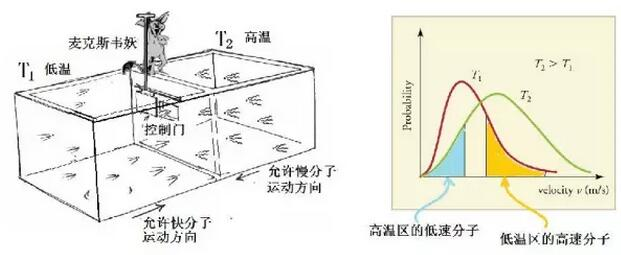
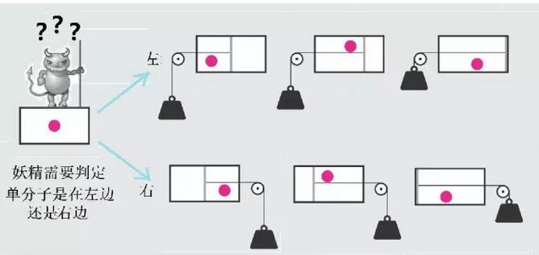

“你站在了牛顿的肩上”，爱因斯坦却回答：不，我是站在麦克斯韦的肩上！来看看麦克斯韦妖！
2016-09-02 张天蓉 信号完整性与电源完整性研究
据说剑桥某位物理学家有一次恭维爱因斯坦说：“你站在了牛顿的肩上”，爱因斯坦却回答：不，我是站在麦克斯韦的肩上！爱因斯坦的回答十分中肯，也确切地表达了他的物理思路和兴趣所在都是跟踪麦克斯韦的足迹。爱因斯坦的主要成就：两个相对论中，狭义相对论显然是为了解决麦克斯韦电磁理论与经典力学的矛盾才得以建立的，而广义相对论则是前面思想之延续。从爱因斯坦在1905年发表的另一篇关于布朗运动的文章，可以看出他也热衷于麦克斯韦曾经致力研究过的分子运动理论。
麦克斯韦（1831年-1879年）虽然只活了48岁，但对物理学作了划时代的贡献，在建立了著名的经典电磁理论之后，从1865年开始，麦克斯韦将研究方向转向了热力学。当年的麦克斯韦注意到克劳修斯在分子运动论上的开创性工作，并且对数学界高斯等建立的概率理论极感兴趣，因此将概率和统计方法应用于热力学，企图从分子的微观运动机制来阐述热力学的宏观规律。麦克斯韦以分子之间的弹性碰撞为基本出发点，旗开得胜，首先得到了十分重要的麦克斯韦速度分布律：

图1 麦克斯韦分布
如今，我们使用现代统计物理的知识，有多种方法推导出麦克斯韦分布。比如说，根据熵增原理，忽略量子效应，加上概率归一化以及系统平均能量与温度有关这两个约束条件，不难得出系统中分子的运动将符合麦克斯韦分布。此外，波尔兹曼当年将这个规律推广到存在势能的情形，而被后人称之为麦克斯韦-波尔兹曼分布，加之麦克斯韦对电磁理论的巨大贡献，使人们忽略了他在统计物理中也起了不可泯灭的先锋作用。
麦克斯韦支持英国物理学家约翰·赫帕斯（1790年－1868年）在1820年研究气体动力学理论时提出的“气体的绝对温度是粒子动能的测量”的观点，但认为在一定温度T下，所有分子的动能并不是一个单一固定的数值，而是符合统计分布的规律，即如图1左所示的分布曲线。虽然任何单个粒子的速度都因为与其它粒子的碰撞而不断变化。然而，对大量粒子来说，处于一个特定的速度范围的粒子所占的比例却几乎不变，麦克斯韦分布便描述了系统处于平衡态时的分布情况。系统的温度越高，曲线（和顶峰）越往右边速度高的区域移动，最大值降低，但分布曲线下面所包括的面积不变（=1），以符合所有概率之和为1的要求。
麦克斯韦分布与热力学第二定律相符合，假设你将温度不等的两个系统相接触，通过碰撞，快速移动的分子将能量传递给缓慢移动的分子，最后达到温度在两者之间的新平衡态。
1865年，热力学奠基人之一克劳修斯把熵增原理应用于无限宇宙中而提出“热寂说”，麦克斯韦从概率统计的角度认真思考这个假说，意识到大自然中必然有适合于如宇宙这种“开放系统”的某种机制，使得系统在某些条件下，貌似“违反了”热力学第二定律。但当时的麦克斯韦对此问题似乎还说不出个所以然，于是便诙谐地设想了一种假想的“小妖精”，即著名的“麦克斯韦妖”（Maxwell's demon）【1】。麦克斯韦假想这种智能小生物能探测并控制单个分子的运动，如图2的左图所示，小妖精掌握和控制着高温系统和低温系统之间的分子通道。

图2 麦克斯韦妖
当年麦克斯韦的假想“妖”利用了分子运动速度的统计分布性质。根据麦克斯韦分布，即使是低温区，也有不少高速分子，高温的系统中也有低速度的分子，如果真有一个能够控制分子运动的小妖精，在两系统的中间设置一个门，只允许快分子从低温往高温运动，慢分子则从高温往低温运动，在“小妖”的这种管理方式下，两边的温差会逐渐加大，高温区的温度会越来越高，低温区的温度越来越低。小妖精造成的温度差是否可以用来对外做功呢？这个想法有点像是第二类“永动机”的翻版。
由于上述原因，有人认为麦克斯韦妖是现代非平衡态统计中耗散理论的雏形，也许可以对麦克斯韦妖作如此高标准的诠释，但并不见得是麦克斯韦当年假想这个妖精时的初衷。历史地看，麦克斯韦是在1867年给泰特（Tait）的信中第一次提出麦克斯韦妖的，并在信中说：“这证明第二定律只具有统计的确定性”，此言表明麦克斯韦是想借此来说明熵增加原理是系统的统计规律。麦克斯韦认为，第二定律描述的不是单个分子的运动行为，而是大量分子表现的统计规律。对统计规律而言，热量只能从温度高的流向温度低的，但是就个别分子而言，温度低的区域的快分子完全可能自发地跑向温度高的区域。
这个小妖精困惑物理学家将近150年，一直不停地有学者进行研究。
有一个不是广为大众知晓的匈牙利犹太人：利奥·希拉德（LeóSzilárd，1898年－1964年），便是研究者之一。希拉德实际上是一个颇有创意的物理学家和发明家，他在1933年构思核连锁反应，促成了原子弹研发的成功，并与恩里科·费米共同获得了核反应堆的专利。此外，他还构思了电子显微镜以及粒子加速器等等。但因为他的这些构思并没有在科学期刊上发表，因此这些“诺奖级别”的贡献最后都归入了他人的名下。希拉德研究热力学小妖精，于1929年根据与麦克斯韦类似的想法，不管麦克斯韦当年的“统计”初衷，构造了一个只管理“一个”分子的简化妖精系统【2】。

图3 西拉德的单分子引擎
如图3所示，希拉德在他的博士论文设想的思想实验中，让麦克斯韦妖操控一个单分子热机。小妖精通过测量，了解分子所处的位置是在左侧还是右侧。如果结果是左侧，则在系统的左边通过一根细绳连接一个重物，单个分子气体经历一个等温过程，通过从环境吸热而膨胀，并提升重物做功；如果结果是右侧，则将重物悬挂于系统的右边而得到功。
不考虑小妖精的测量过程，这个模型像是一个违背第二定律的永动机，使得熵减少的永动机当然是不可能的，希拉德认为问题就正是出在“测量”上。小妖精进行测量的目的是为了获得信息，即在每次完成循环回复系统原状的过程中至少需要获得二进制中一个比特的信息。信息的获取需要付出代价，就是使得周边环境的熵增加。因此，系统“热熵”（kBT*log2）的减少是来自于小妖精测量过程中“信息熵”（log2）的增加。系统总熵值因而也增加，热力学第二定律仍然成立。
难能可贵的是，希拉德通过对单分子引擎（二元系统）的分析，第一次认识到“信息熵”、“二进制”等概念。回头追溯历史，香农于1948年才提出信息论，而希拉德的工作却是在1929年完成的，显然他已经有了许多模糊的想法。是希拉德第一次认识到信息的物理本质，将信息与能量消耗联系起来。
1961年，美国IBM的物理学家罗夫·兰道尔（Rolf Landauer，1927年-1999年）提出并证明了兰道尔原理，即计算机在删除信息的过程中会对环境释放出极少的热量。从“熵”的角度看待这个问题，一个随机二元变量的熵是1比特，具有固定数值时的熵为0，消除信息的结果使得这个2元系统的熵从0增加到1比特，必然有电能转换成了热能被释放到环境中，这也是我们的电脑不断发热的原因，该热量的数值与环境温度成正比，删除信息的过程中电能转变成热能是不可逆的热力学过程，因而计算机通过计算而散发热量的过程也是不可逆的。
不过，兰道尔又进一步设想：是否可以通过改进电路或算法来减少信息删除从而减少热量的释放呢？由此他提出了“可逆计算”的概念，并和他在IBM的同事贝内特一起进行研究。所谓可逆计算，就是通过恢复和重新利用丢失数据的能量来尽量减少计算机的能耗，贝内特（Bennett，1943年-）是量子计算与量子信息领域的计算机专家，他展示了如何通过可逆计算来避免消耗能量，并在1981年发表的论文中表明，不耗散能量的“麦克斯韦妖”不存在，并且，这种耗散是发生在“妖”对上一个判断“记忆”的消除过程中，“遗忘”需要以消耗能量为代价，这个过程是逻辑不可逆的。
历经150年的“麦克斯韦妖”妖风不断，理论物理学家们用这个思想实验深入思考热力学的统计意义，实验物理学家利用现代的高超实验技术在实验室里研究它。
第一个对此作实验研究的是奥斯丁德州大学的Mark Raizen小组，他们使用激光将原子密闭于磁性陷阱中，原子受到的平均势场，即所谓光学势，充当麦克斯韦妖的角色，以控制原子的移动方向，对冷原子和热原子进行排序。2012年，德国奥格斯堡大学的鲁兹（Eric Lutz）和他的同事，用实验验证兰道尔的信息擦除原理，根据实验结果得出信息的消除具体需要多少能量，证明了兰道尔的理论确实是正确的。
参考文献：
【1】Maxwell,J. C. (1871). Theory of Heat., reprinted (2001) New York: Dover,
【2】赵凯华;罗蔚因. 《新概念物理教程 热学》第二版. 高等教育出版社.
【3】EricLutz and Sergio Ciliberto，Information: From Maxwell’sdemon to Landauer’s eraser，Oct. 25, 2015 - PhysicsToday。